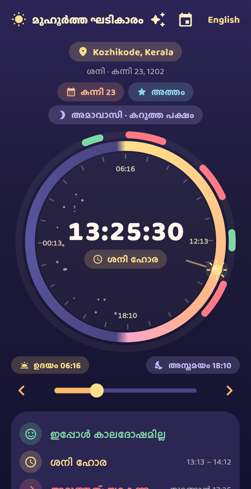
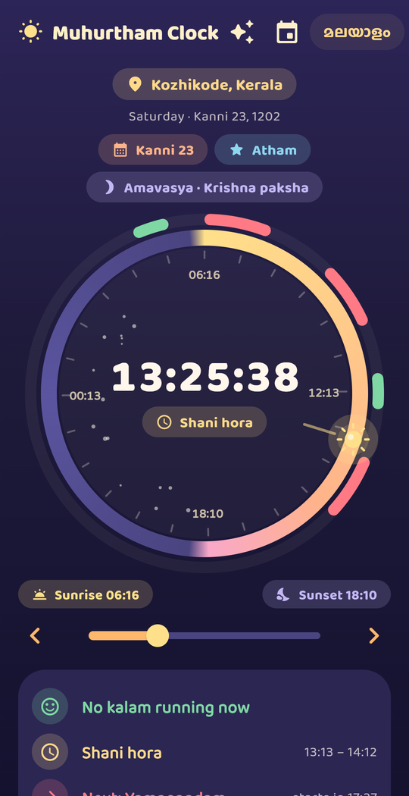

The Kerala panchangam turned into a clock. One glance tells you whether a kalam is running, which hora it is, and when the next good window begins, for the town you are in.
Android first, in Malayalam and English. ₹99, no ads, no account.

One full turn is one day in the Kerala sense: from today's sunrise round to tomorrow's.
Each one is a fixed slice of the day between your town's sunrise and sunset, so the clock times are yours, not Thiruvananthapuram's or Chennai's.
Daylight is divided into eight equal parts; which part is Rahu kalam depends on the weekday (the eighth part on Sunday, the second on Monday, and so on, following the published panchangam table). About an hour and a half in Kerala.
Another of the eight daytime parts, again fixed by the weekday: the seventh on Sunday, the sixth on Monday, down to the first on Saturday. Kerala panchangams list it beside Rahu kalam.
The third daily kalam from the same eight-part division, with its own weekday table. The three never overlap on one day.
Daylight also divides into fifteen muhurthams; the eighth, the one straddling local noon, is Abhijit, held good for most beginnings. Some traditions set it aside on Wednesdays; the app shows it and notes that in its source line.
The two muhurthams (2 × 48 minutes) that end one muhurtham before sunrise, that is roughly 96 to 48 minutes before the sun comes up. The clock shows it for the sunrise still ahead.
Day and night are each split into twelve horas. The first hora of the day belongs to the weekday's lord, and the lords then follow the fixed order Sun, Venus, Mercury, Moon, Saturn, Jupiter, Mars through the night. Run that cycle for 24 horas and you land on the next weekday's lord, which is where the weekday order itself comes from.
The Kollavarsham date (Kanni 23, 1202 and the like) from the sun's position at sunrise, the weekday, and sunrise and sunset to the minute.
The panchangam elements prevailing at sunrise, each with the time it ends, so you can see when today's nakshatram gives way to tomorrow's.
Sun to Ketu, each with its rashi and nakshatram for the moment shown on the dial. Move the slider and they move with it.
Pick an occasion (wedding, choroonu, naming, vidyarambham, grihapravesham, travel, starting a business) and a range of one to three months, and the app lists candidate windows with the reason each one qualifies. Tables still under review are shown as such.

Nothing on the dial is guessed, looked up from a printed table for another city, or written by an AI.
What it is not. Muhurtham Clock reports what the panchangam tradition marks for a time; it does not predict anything about you, and it is no substitute for a family astrologer's judgement on an important date, or for medical, legal or financial advice.
പഞ്ചാംഗ പാരമ്പര്യം ഒരു സമയത്തെക്കുറിച്ച് പറയുന്നത് ഈ ആപ്പ് കാണിക്കുന്നു; പ്രവചനമല്ല. പ്രധാന കാര്യങ്ങൾക്ക് കുടുംബജ്യോത്സ്യന്റെ അഭിപ്രായത്തിന് പകരമല്ല.
Printed panchangams are computed for one reference town and often rounded to five minutes. The app uses your town's own sunrise, so Kasaragod and Thiruvananthapuram get different Rahu kalams on the same day, as they should.
The day you last loaded stays on the phone, so the clock keeps running and the arcs stay correct until the next sunrise. Changing the town or date needs a connection.
No. You pick a town from a list; the app never asks for location permission and never reads your GPS.
Not yet. The night-time kalam order is still under review by our Jyotisha reader, and the app does not show anything whose source we have not checked.
The app is built for both; Android ships first. Write to us if you would like to test the iOS build.
Muhurtham Clock is coming to Google Play as a one-time ₹99 purchase, with no ads and no account. This page will carry the store link the day it is live.